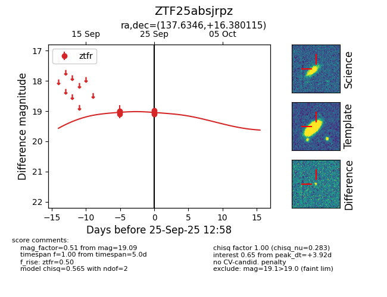
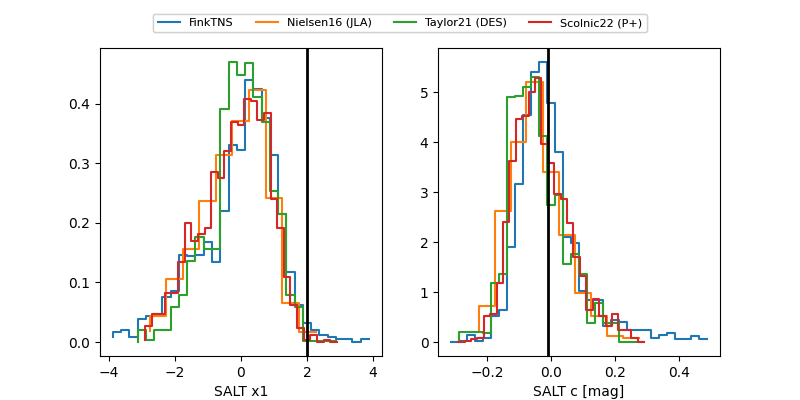

FINK: ZTF25absjrpz
Lasair: ZTF25absjrpz
ALeRCE: ZTF25absjrpz
ZTF25absjrpz (ztf,fink)
equatorial (ra, dec) = (137.6346,+16.38011)
galactic (l, b) = (212.8253,+37.99550)


last ztfr=19.09
7 ztfr detections